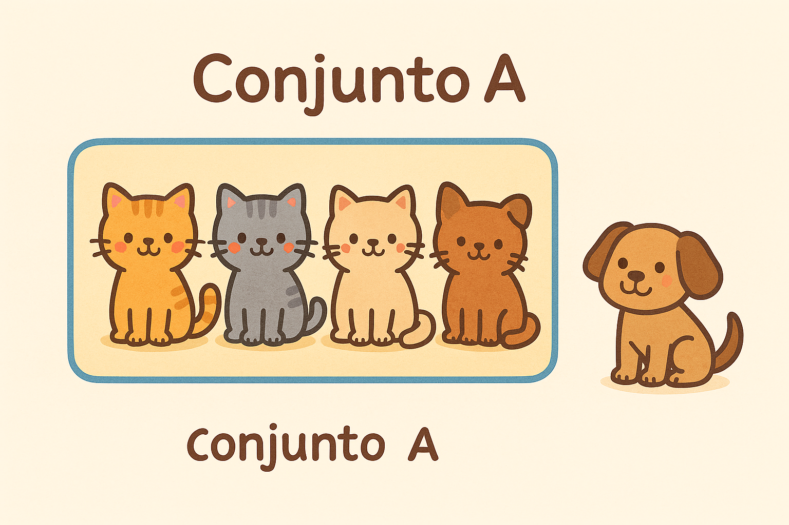

Conjuntos: Operações e Propriedades
União, interseção, potência e Leis de De Morgan
Disciplina: Matemática Discreta – Engenharia da Computação
Esta página foi organizada para apoiar a aula e também servir como material completo de estudo. A ideia é que você consiga aprender o conteúdo mesmo sem ter assistido à explicação presencial.
1. Visão geral do tópico
Em Matemática Discreta, conjuntos são uma forma de organizar objetos, elementos ou informações. Em computação, eles aparecem em filtros, permissões, consultas, bancos de dados, busca, agrupamentos de usuários, tags, testes e lógica de programação.
Ao estudar conjuntos, você desenvolve uma linguagem formal para representar coleções de dados e regras sobre esses dados. Isso é muito útil em Engenharia de Software, porque sistemas reais frequentemente manipulam grupos de usuários, arquivos, permissões, requisitos ou estados.
2. O que é um conjunto?
Um conjunto é uma coleção de elementos. Usamos chaves para representá-lo. Exemplo:
\[ A = \{1, 2, 3, 4\} \]
Isso significa que os elementos 1, 2, 3 e 4 pertencem ao conjunto \(A\). Se quisermos dizer que o número 2 pertence a \(A\), escrevemos:
\[ 2 \in A \]
Se o número 7 não pertence a \(A\), escrevemos:
\[ 7 \notin A \]
Exemplo em contexto computacional
Considere o conjunto dos estudantes que entregaram uma atividade:
\[ E = \{\text{Ana}, \text{Gustavo}, \text{Larissa}, \text{Natan}\} \]
Nesse caso, o conjunto representa uma coleção de estudantes com uma característica em comum: terem entregue a atividade.

Imagem gerada pelo Copilot
3. União de conjuntos
A união de dois conjuntos reúne todos os elementos que estão em pelo menos um deles.
\[ A \cup B \]
Lê-se: “A união B”.
Exemplo matemático
\[ A = \{1, 2, 3\}, \quad B = \{3, 4, 5\} \]
\[ A \cup B = \{1, 2, 3, 4, 5\} \]
Observe que o elemento 3 aparece nos dois conjuntos, mas na união ele aparece apenas uma vez.
Exemplo em Engenharia de Software
Imagine um sistema com dois grupos:
- \(A\): usuários com permissão de leitura;
- \(B\): usuários com permissão de escrita.
O conjunto \(A \cup B\) representa todos os usuários que possuem leitura, escrita ou ambas.
leitura = {"Ana", "Gustavo", "Larissa"}
escrita = {"Larissa", "Natan"}
uniao = leitura.union(escrita)
print(uniao)
Imagem gerada pelo ChatGPT
4. Interseção de conjuntos
A interseção contém apenas os elementos que pertencem aos dois conjuntos ao mesmo tempo.
\[ A \cap B \]
Exemplo matemático
\[ A = \{1, 2, 3\}, \quad B = \{3, 4, 5\} \]
\[ A \cap B = \{3\} \]
Exemplo em Engenharia de Software
Em um sistema de vagas:
- \(A\): candidatos que sabem Java;
- \(B\): candidatos que sabem banco de dados.
A interseção \(A \cap B\) representa os candidatos que sabem Java e banco de dados.
java = {"Ana", "Gustavo", "Larissa"}
banco = {"Larissa", "Elisa"}
intersecao = java.intersection(banco)
print(intersecao)
Imagem gerada pelo chatGPT
5. Conjunto das partes ou conjunto potência
O conjunto das partes de um conjunto \(A\), indicado por \(\mathcal{P}(A)\), é o conjunto formado por todos os subconjuntos possíveis de \(A\).
Exemplo
Se:
\[ A = \{a, b\} \]
então:
\[ \mathcal{P}(A) = \{\emptyset, \{a\}, \{b\}, \{a,b\}\} \]
Observe que o conjunto vazio também é subconjunto de \(A\).
Se um conjunto tem \(n\) elementos, então seu conjunto das partes tem \(2^n\) subconjuntos.
Exemplo em Engenharia de Software
Suponha que um sistema tenha 3 funcionalidades opcionais:
\[ F = \{\text{chat}, \text{notificações}, \text{tema escuro}\} \]
O conjunto das partes de \(F\) representa todas as combinações possíveis de funcionalidades. Isso pode ser usado em testes de software, configuração de produtos e análise de feature flags.
from itertools import combinations
elementos = ["chat", "notificacoes", "tema_escuro"]
partes = []
for i in range(len(elementos) + 1):
for c in combinations(elementos, i):
partes.append(set(c))
print(partes)
Imagem gerada pelo chatGPT
6. Leis de De Morgan
As Leis de De Morgan mostram como negar união e interseção. Elas são muito importantes em matemática, lógica e programação.
\[ \overline{A \cup B} = \overline{A} \cap \overline{B} \]
\[ \overline{A \cap B} = \overline{A} \cup \overline{B} \]
Em palavras:
- o complemento da união é a interseção dos complementos;
- o complemento da interseção é a união dos complementos.
Exemplo com conjuntos
Considere o universo:
\[ U = \{1,2,3,4,5,6\} \]
\[ A = \{1,2,3\}, \quad B = \{3,4\} \]
Primeiro, calcule a união:
\[ A \cup B = \{1,2,3,4\} \]
Agora o complemento da união em relação a \(U\):
\[ \overline{A \cup B} = \{5,6\} \]
Agora os complementos individuais:
\[ \overline{A} = \{4,5,6\}, \quad \overline{B} = \{1,2,5,6\} \]
E a interseção:
\[ \overline{A} \cap \overline{B} = \{5,6\} \]
Os dois lados são iguais. Portanto, a primeira lei foi confirmada.
Exemplo em programação
Em código, De Morgan aparece muito em condições lógicas.
!(A || B) equivale a (!A && !B)
!(A && B) equivale a (!A || !B)Exemplo prático:
if (!(usuarioEhAdmin || usuarioEhProfessor)) {
System.out.println("Acesso negado");
}Pode ser reescrito como:
if (!usuarioEhAdmin && !usuarioEhProfessor) {
System.out.println("Acesso negado");
}Essa equivalência ajuda a simplificar expressões e tornar o código mais claro.

Imagem gerada pelo chatGPT
7. Aplicações práticas em Engenharia de Software
Aplicação 1 – Filtros de usuários
Em uma plataforma, podemos ter:
- \(A\): usuários que compraram no último mês;
- \(B\): usuários que acessaram o app nesta semana.
Então:
- \(A \cup B\): usuários que compraram ou acessaram;
- \(A \cap B\): usuários que compraram e acessaram;
- \(\overline{A}\): usuários que não compraram;
- \(\overline{A \cup B}\): usuários que nem compraram nem acessaram.
Aplicação 2 – Controle de permissões
Papéis de usuários podem ser modelados como conjuntos de permissões. A união pode combinar permissões de múltiplos papéis; a interseção pode mostrar permissões em comum.
Aplicação 3 – Testes de software
O conjunto das partes pode representar todas as combinações possíveis de funcionalidades ativadas. Isso é útil para análise de cobertura e planejamento de testes.
8. Atividade
Uma possibilidade é criar um programa que receba três conjuntos:
- usuários que assistiram a uma aula;
- usuários que entregaram uma atividade;
- usuários que participaram do fórum.
Depois, o programa deve calcular:
- a união dos conjuntos;
- a interseção de dois deles;
- quem não participou de nenhuma atividade;
- quem participou de exatamente uma atividade;
- todas as combinações possíveis de participação.
Desafio
Modele os conjuntos em código e apresente o resultado de cada operação. Depois, explique com suas palavras o significado de cada resultado no contexto do problema.
10. Para revisar
- União junta elementos dos dois conjuntos.
- Interseção pega somente os elementos em comum.
- O conjunto potência contém todos os subconjuntos possíveis.
- As Leis de De Morgan transformam complemento de união em interseção de complementos, e vice-versa.
- Esses conceitos aparecem em filtros, permissões, consultas, lógica booleana e testes de software.